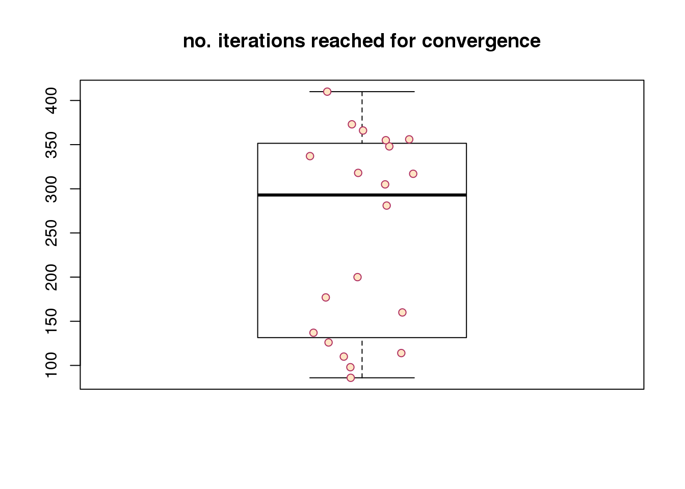

parametric cellcycleR for image intensities: convergence assessment
Joyce Hsiao
Last updated: 2018-01-25
Code version: a62292e
Introduction/Summary
In this document, we assess the convergence of cellcycleR across all samples and all batches on fitting intensity data - three intensity vectors for ~1,200 single cell samples.
Results:
20 runs of sin_cell_ordering_class on 20 different random seeds. Each 500 iterations. We assess the range of log-likelihood, and model estimates \(\hat{\alpha}_g\), \(\hat{\phi}_g\), and \(\hat{\sigma}_g\).
Large deviation in the estimates of \(\phi_g\): because \(\phi_g\) is not identifiable.
Not much deviation between the 20 runs in the estimates for \(\alpha_g\) amplitude or \(\sigma_g\) or log-likelihood.
Re. speed of convergence, across random seeds, it takes about less than 50 iterations to reach convergence. Note that the observation vector of each cell is a three-dimensional vector (green, red, and dapi). The number of iterations will go up as we increase the dimension of the observations (e.g., number of genes).
Model overview
For \(S\) cells, let the vector of true cell time be \(t_S\). We use an iterative scheme to estimate cell time parameters \(t_S\), and curve parameters \(\alpha_g\), \(\phi_g\), and \(\sigma_g\). First, we consider \(T\) time classes which is a set of uniformly spaced time points on \((0, 2\pi)\). In the first iteration, we assign each cell \(s\) to a time class \(t_s^{(0)}\) and estimate the curve parameters \(\alpha_g\), \(\phi_g\), and \(\sigma_g\). In the second iteratio, we estimate \(t_s^{(1)}\) based on the model estimates from the first iteration (\(\hat{\alpha}_g\), \(\hat{\phi}_g\), and \(\hat{\sigma}_g\)). We continue this iterative scheme until convergence. For any \(n\) iterations, starting from 0, we fit the following model for gene \(g\) and and cell \(s\).
\[ Y_{sg} = \alpha_g sin(t_s^{(n)} + \phi_g) + \epsilon_{sg} \] where \(\epsilon_{sg} \sim N(0, \sigma^2_g)\), and frequency is 1.
Analysis
20 runs of sin_cell_ordering_class on 20 different random seeds. Each 500 iterations.
We assess the range of log-likelihood, and model estimates \(\hat{\alpha}_g\), \(\hat{\phi}_g\), and \(\hat{\sigma}_g\).
summary(loglik) Min. 1st Qu. Median Mean 3rd Qu. Max.
-3350 -3312 -3290 -3290 -3262 -3244 summary(amp) Red Green DAPI
Min. :1.289 Min. :1.060 Min. :1.002
1st Qu.:1.301 1st Qu.:1.081 1st Qu.:1.019
Median :1.318 Median :1.093 Median :1.036
Mean :1.316 Mean :1.090 Mean :1.035
3rd Qu.:1.324 3rd Qu.:1.099 3rd Qu.:1.047
Max. :1.346 Max. :1.106 Max. :1.068 summary(phi) Red Green DAPI
Min. :0.4663 Min. :0.1580 Min. :0.06544
1st Qu.:1.2966 1st Qu.:0.6726 1st Qu.:0.64207
Median :3.9793 Median :3.4906 Median :3.48495
Mean :3.5329 Mean :2.9224 Mean :2.89855
3rd Qu.:5.4010 3rd Qu.:4.5465 3rd Qu.:4.47567
Max. :5.9765 Max. :6.1127 Max. :6.01985 summary(sigma) Red Green DAPI
Min. :0.3654 Min. :0.6702 Min. :0.6928
1st Qu.:0.3774 1st Qu.:0.6745 1st Qu.:0.7085
Median :0.3854 Median :0.6814 Median :0.7141
Mean :0.3876 Mean :0.6815 Mean :0.7133
3rd Qu.:0.3971 3rd Qu.:0.6873 3rd Qu.:0.7180
Max. :0.4120 Max. :0.6990 Max. :0.7230 log-liklihood distribution
plot(loglik)par(mfrow=c(5,4), mar=c(1,1,2.5,1), oma=rep(1,4))
for (i in 1:length(objs)) {
plot(objs[[i]]$loglik_iter[-1],
main = paste("round no.", i))
}
title("log-likelihood", outer=TRUE)
speed of convergence
maxiter <- vector("numeric", length(objs))
for (i in 1:length(maxiter)) {
maxiter[i] <- which.max(objs[[i]]$loglik_iter[-1])
}
boxplot(maxiter, outpch = NA, main = "no. iterations reached for convergence")
stripchart(maxiter,
vertical = TRUE, method = "jitter",
pch = 21, col = "maroon", bg = "bisque",
add = TRUE) 
Session information
R version 3.4.1 (2017-06-30)
Platform: x86_64-redhat-linux-gnu (64-bit)
Running under: Scientific Linux 7.2 (Nitrogen)
Matrix products: default
BLAS/LAPACK: /usr/lib64/R/lib/libRblas.so
locale:
[1] LC_CTYPE=en_US.UTF-8 LC_NUMERIC=C
[3] LC_TIME=en_US.UTF-8 LC_COLLATE=en_US.UTF-8
[5] LC_MONETARY=en_US.UTF-8 LC_MESSAGES=en_US.UTF-8
[7] LC_PAPER=en_US.UTF-8 LC_NAME=C
[9] LC_ADDRESS=C LC_TELEPHONE=C
[11] LC_MEASUREMENT=en_US.UTF-8 LC_IDENTIFICATION=C
attached base packages:
[1] parallel stats graphics grDevices utils datasets methods
[8] base
other attached packages:
[1] plotrix_3.7 Biobase_2.38.0 BiocGenerics_0.24.0
[4] RColorBrewer_1.1-2 wesanderson_0.3.4 cowplot_0.9.2
[7] dplyr_0.7.4 data.table_1.10.4-3 cellcycleR_0.1.6
[10] zoo_1.8-1 binhf_1.0-1 adlift_1.3-3
[13] EbayesThresh_1.4-12 wavethresh_4.6.8 MASS_7.3-47
[16] ggplot2_2.2.1
loaded via a namespace (and not attached):
[1] Rcpp_0.12.14 compiler_3.4.1 git2r_0.20.0 plyr_1.8.4
[5] bindr_0.1 tools_3.4.1 digest_0.6.13 evaluate_0.10.1
[9] tibble_1.3.4 gtable_0.2.0 lattice_0.20-35 pkgconfig_2.0.1
[13] rlang_0.1.4 yaml_2.1.16 bindrcpp_0.2 stringr_1.2.0
[17] knitr_1.17 rprojroot_1.3-1 grid_3.4.1 glue_1.2.0
[21] R6_2.2.2 rmarkdown_1.8 magrittr_1.5 backports_1.1.2
[25] scales_0.5.0 htmltools_0.3.6 assertthat_0.2.0 colorspace_1.3-2
[29] stringi_1.1.6 lazyeval_0.2.1 munsell_0.4.3 This R Markdown site was created with workflowr